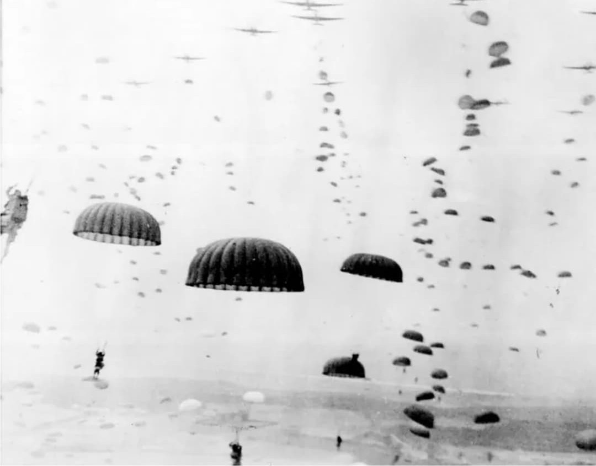
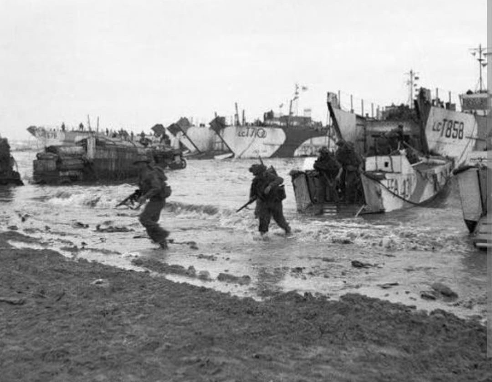

L’Opération Overlord est l’une des offensives les plus déterminantes de la Seconde Guerre mondiale. Préparée dans le plus grand secret, elle ouvre un nouveau front en Europe de l’Ouest et marque le début de la libération de la France. Le 6 juin 1944, plus de 150 000 soldats alliés débarquent en Normandie, soutenus par une flotte et une aviation d’une ampleur inédite.
Le « Jour J » n’est que la première étape d’une campagne qui s’étend sur plusieurs mois, visant à établir une tête de pont solide, libérer les villes normandes et repousser les forces allemandes vers l’est. Overlord devient rapidement un tournant majeur du conflit.

6 juin 1944 – août 1944
L’opération se déroule sur les plages d’Utah, Omaha, Gold, Juno et Sword. La Normandie est choisie pour ses défenses moins renforcées que le Pas-de-Calais et pour la possibilité d’établir rapidement une tête de pont.
Alliés : États-Unis, Royaume-Uni, Canada, France libre, forces polonaises, norvégiennes et autres contingents.
Axe : Allemagne nazie (Wehrmacht, unités de la Waffen-SS).
L’objectif principal est d’établir une présence militaire durable en France pour préparer l’avancée vers Paris puis l’Allemagne. Une campagne aérienne massive précède le débarquement afin de désorganiser les défenses allemandes.
Malgré une résistance particulièrement violente à Omaha Beach, les Alliés sécurisent les plages et progressent vers l’intérieur des terres. La prise de Caen, Saint-Lô et Cherbourg constitue des étapes essentielles pour consolider la tête de pont.

Le 6 juin 1944, les troupes alliées débarquent sur cinq plages réparties sur plus de 80 kilomètres. Les parachutistes américains et britanniques sont largués dans la nuit pour sécuriser les ponts, routes et villages stratégiques.
Au fil des semaines, les Alliés étendent leur contrôle sur la Normandie, libèrent les villes occupées et repoussent les forces allemandes. La percée d’Avranches et l’encerclement de la poche de Falaise marquent l’effondrement des défenses allemandes dans la région.
La victoire en Normandie ouvre la voie à la libération de Paris le 25 août 1944 et à l’avancée rapide vers la frontière allemande. Overlord est un succès stratégique majeur qui prépare la chute du régime nazi.
Overlord marque un tournant décisif dans la guerre. L’opération démontre la capacité des Alliés à coordonner une offensive massive impliquant plusieurs nations et des moyens logistiques colossaux. Elle symbolise l’espoir de millions d’Européens qui voient dans le débarquement le début de la fin de l’occupation nazie.